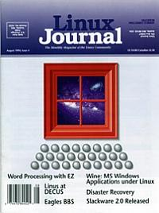

Shutdown Archive web server
Search:
Linux Journal
Issue #4/August 1994

Features
EZ as a Word Processor
by Terry Gliedt
Part of the Andrew project, ez edits text and images using a graphical interface
Disaster Recovery
by Mark F. Komarinski
Something is wrong, now what: This article will help you figure out what went wrong, how to get started on fixing it,or now to prepare for possible crashes.
Wine
by Bob Amstadt and Michael K. Johnson
Wine allows you to run programs compiled for MS Windows under Linux, FreeBSD, and NetBSD. Learn what Wine is, and how it works.
Eagles BBS
by Ray Rocker
The birth of a popular bulletin board system.
Linux Does Comics
by Robert Suckling
Linux to the rescue—crating an easy-to-use, retail subscription system.
News & Articles
Linux Torvalds at DECUS 1994
by Bob Tadlock
Unix and Computer Science
by Ronda Hauben
Linux Sound Support
by Jeff Tranter
ICMAKE Part 4
by Frand Brokken and K. Kubat
Slackware 2.0 Released
by Phil Hughes
Linux Programming Hints
by Michael K. Johnson
Cooking with Linux
by Matt Welsh
What's GNU
Bash-The GNU Shell
by Chet Ramey
Columns
Letters to the Editor
Linux Products and Events
Archive Index
Shutdown Archive web server
Search:
Copyright © 1994 - 2018
Linux Journal
. All rights reserved.